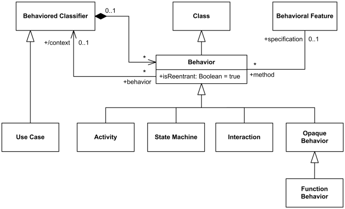
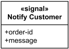
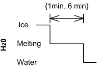

Common Behaviors Reference
| Notation | Description |
|---|---|
| Behavior | |
|

UML Behaviors - Activity, State Machine, Interaction, and Opaque Behavior. |
|
| Signal | |
|

The Notify Customer signal. |
A signal is a classifier which specifies communication of send request instances between objects. A signal is depicted by a classifier symbol with the keyword «signal». |
| Reception | |

Customer is prepared to react to the receipt of the Notify Customer signal. |
A reception is behavioral feature declaring that a classifier is prepared to react to the receipt of a signal. A reception designates a signal and specifies the expected behavioral response. Reception is shown using the notation for operations with the keyword «signal». |
| Duration Constraint | |
|

An example of notation for timing diagram - Ice should melt into water in 1 to 6 minutes |
Duration constraint is an interval constraint that refers to a duration interval. The duration interval is duration used to determine whether the constraint is satisfied. Duration constraint is shown as some graphical association between a duration interval and the constructs that it constrains. The notation is specific to the diagram type. |
| Time Constraint | |

An example of notation for timing diagram - Person should wake up between 5:40 am and 6 am |
Time constraint is an interval constraint that refers to a time interval. The time interval is time expression used to determine whether the constraint is satisfied. Time constraint is shown as graphical association between a time interval and the construct that it constrains. Typically this graphical association is a small line, e.g., between an occurrence specification and a time interval. |